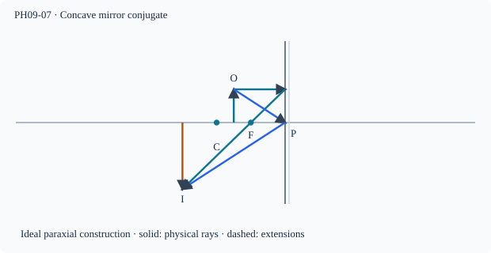

Prerequisite bridge
PH09-06
Before starting, identify the reference frame, directed rays, units and applicable geometric assumptions. Unbound prerequisites remain provisional.
Connected textbook foundation (preserved from PR #5)
8. Concave mirror image zones
A real object outside the centre of curvature of a concave mirror produces a reduced inverted real image between the focus and the centre in the ideal paraxial construction. An object at the centre produces an equal-size inverted image at the centre. As the object approaches the focus from beyond it, the real image moves outward and grows.
At the focus the ideal reflected rays are parallel and do not meet at a finite screen position. When the real object is within the focal length, the reflected rays diverge and the virtual image appears upright behind the mirror. This is why a concave shaving mirror magnifies a close face while a distant streetlamp can make a real focused spot.
Study technique: Construct at least two independent reflected rays and interpret their actual or extended intersection before consulting the formula.
Build and check the model
For concave mirrors use Cartesian signs: incident light left→right, pole origin, f=−F, u=−d. Then v=−Fd/(d−F), m=−v/u. For d>F, v<0 and m<0 (real, inverted); for 0<d<F, v>0 and m>0 (virtual, erect). At d=F reflected paraxial rays are parallel, so no finite conjugate. Crossing C (d=2F) changes magnification, not real/virtual type.
Worked anchor
F=12 cm; d=18 gives v=−36 cm, m=−2. For d=8, v=+24 cm, m=+3. At d=24, v=−24 cm and m=−1.
Condition and limiting check
A screen must lie in the real-ray convergence region; large apertures and off-axis rays limit ideal imaging.
Misconception repair
An object crossing the centre of curvature does not switch the real/virtual character; crossing focus does.
Reasoning diagram

Self-check before transfer
For a concave mirror F=9 cm, an object lies 6 cm from the pole. Calculate the signed image distance and magnification.
Check the reasoning
v=−Fd/(d−F)=+18 cm; m=v/d=+3, virtual upright enlarged.
The next page contains fresh authored transfer, not an examination reproduction.
Source and figure status
Curriculum pointer CBSE10; candidate scope only. Preserved chapter manuscript. An original subtopic-specific SVG is attached above. Scientific figure and teaching-sufficiency reviews remain HOLD.